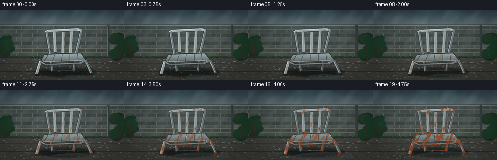
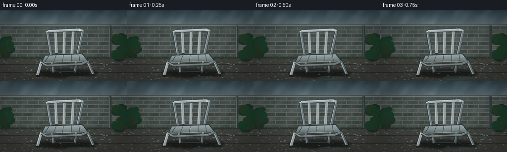

CODING AGENTS AS PIXEL WORLD MODELS
traex/DeepSeek-V4.1-Flash · phygen_158
点击播放 · 原生 RGB 像素
逐轮保存的候选
回放视频、检查图与代码变化。
每份候选均可单独播放。实际图片检查记录在下方工具轨迹中。
候选 01播放与检查图
点击播放 · 原生 RGB 像素


展开代码变化
--- 上一保存版本
+++ 本次保存版本
@@ -0,0 +1,377 @@
+"""Procedural PixelWorld render: a metal garden chair weathering in the rain."""
+
+from pathlib import Path
+
+import numpy as np
+from PIL import Image, ImageDraw, ImageFilter
+
+import artifact_io
+
+
+CASE_DIR = Path(__file__).resolve().parent
+W, H, N, FPS = 256, 144, 20, 4
+SS = 3
+RNG = np.random.default_rng(158)
+
+
+def mix(a, b, t):
+ return tuple(int(round(a[i] * (1.0 - t) + b[i] * t)) for i in range(3))
+
+
+def layer(size=(W * SS, H * SS)):
+ return Image.new("RGBA", size, (0, 0, 0, 0))
+
+
+def noise_field(x, y, scale, phase=0.0):
+ """Smooth, deterministic procedural noise made from layered trig fields."""
+ return (
+ np.sin(x * 0.117 * scale + y * 0.061 * scale + phase) * 0.42
+ + np.sin(x * 0.039 * scale - y * 0.137 * scale + phase * 1.7) * 0.30
+ + np.sin((x + y) * 0.213 * scale - phase * 0.8) * 0.18
+ + np.cos(x * 0.311 * scale + y * 0.097 * scale + phase * 2.1) * 0.10
+ )
+
+
+def draw_metal_tube(draw, points, width, color, highlight, dark, offset=(-1.2, -1.0)):
+ pts = [(x * SS, y * SS) for x, y in points]
+ width *= SS
+ draw.line(pts, fill=dark + (255,), width=int(width + 3.2 * SS), joint="curve")
+ draw.line(pts, fill=color + (255,), width=int(width + 1.3 * SS), joint="curve")
+ shifted = [((x + offset[0] * SS), (y + offset[1] * SS)) for x, y in pts]
+ draw.line(shifted, fill=highlight + (235,), width=max(1, int(width * 0.28)), joint="curve")
+
+
+def draw_metal_bar(draw, polygon, color, highlight, dark):
+ pts = [(int(x * SS), int(y * SS)) for x, y in polygon]
+ draw.polygon(pts, fill=dark + (255,), outline=dark + (255,))
+ inset = 1.1
+ cx = sum(p[0] for p in polygon) / len(polygon)
+ cy = sum(p[1] for p in polygon) / len(polygon)
+ inner = []
+ for x, y in polygon:
+ dx, dy = cx - x, cy - y
+ length = max(0.001, (dx * dx + dy * dy) ** 0.5)
+ inner.append(((x + dx / length * inset) * SS, (y + dy / length * inset) * SS))
+ draw.polygon(inner, fill=color + (255,))
+ draw.line(inner + [inner[0]], fill=highlight + (155,), width=max(1, int(0.85 * SS)))
+
+
+def background(frame):
+ rng = np.random.default_rng(44)
+ yy, xx = np.mgrid[0:H * SS, 0:W * SS]
+ x = xx / SS
+ y = yy / SS
+
+ # Rain-softened sky above the garden wall.
+ sky_t = np.clip(y / 38.0, 0.0, 1.0)
+ sky_top = np.array([61, 78, 88], dtype=float)
+ sky_bottom = np.array([119, 134, 137], dtype=float)
+ rgb = sky_top[None, None, :] * (1 - sky_t[..., None]) + sky_bottom[None, None, :] * sky_t[..., None]
+ cloud = noise_field(x, y, 1.0, 0.8 + frame * 0.045)
+ cloud = np.clip((cloud + 0.35) * 0.7, 0, 1)
+ rgb += (cloud[..., None] - 0.5) * np.array([20, 22, 23])
+ rgb = np.clip(rgb, 0, 255).astype(np.uint8)
+ image = Image.fromarray(rgb, "RGB").convert("RGBA")
+ draw = ImageDraw.Draw(image, "RGBA")
+
+ # Damp brick wall.
+ wall_top, wall_bottom = 31, 96
+ wall_rgb = np.zeros_like(rgb)
+ wall_rgb[..., :] = (72, 79, 76)
+ brick_h = 8.0
+ brick_w = 22.0
+ row = np.floor((y - wall_top) / brick_h)
+ offset = np.where(row % 2 == 0, 0.0, brick_w * 0.5)
+ mortar = ((np.mod(x + offset, brick_w) < 1.15) | (np.mod(y - wall_top, brick_h) < 1.05))
+ damp = noise_field(x, y, 1.4, 2.0)
+ brick_variation = np.sin(row * 2.7) * 8.0 + damp * 10.0
+ wall_rgb = np.clip(wall_rgb.astype(float) + brick_variation[..., None], 0, 255)
+ wall_rgb[mortar] = np.array([101, 105, 97])
+ wall_mask = ((y >= wall_top) & (y < wall_bottom))[..., None]
+ arr = np.asarray(image).astype(float)
+ arr[..., :3] = np.where(wall_mask, wall_rgb, arr[..., :3])
+ image = Image.fromarray(np.clip(arr, 0, 255).astype(np.uint8), "RGBA")
+ draw = ImageDraw.Draw(image, "RGBA")
+
+ # Capstone and dark moss line.
+ draw.rectangle((0, 28 * SS, W * SS, 33 * SS), fill=(81, 91, 89, 255))
+ draw.line((0, 31 * SS, W * SS, 31 * SS), fill=(145, 151, 143, 155), width=SS)
+ draw.rectangle((0, 94 * SS, W * SS, 100 * SS), fill=(45, 57, 47, 255))
+ for i in range(46):
+ gx = rng.uniform(0, W)
+ gy = rng.uniform(93.5, 98.5)
+ gh = rng.uniform(2.0, 6.0)
+ draw.line((gx * SS, gy * SS, (gx + rng.uniform(-1.5, 1.5)) * SS, (gy - gh) * SS),
+ fill=(52 + i % 17, 83 + i % 21, 49 + i % 11, 190), width=SS)
+
+ # Wet paving stones with perspective joints.
+ ground = Image.new("RGBA", image.size, (0, 0, 0, 0))
+ gd = ImageDraw.Draw(ground)
+ gd.rectangle((0, 97 * SS, W * SS, H * SS), fill=(69, 69, 63, 255))
+ for gy in (97, 110, 126):
+ gd.line((0, gy * SS, W * SS, gy * SS), fill=(38, 41, 39, 255), width=int(1.1 * SS))
+ vanishing_x = 128
+ for bottom_x in range(-30, 310, 29):
+ top_x = vanishing_x + (bottom_x - vanishing_x) * 0.46
+ gd.line((top_x * SS, 97 * SS, bottom_x * SS, H * SS),
+ fill=(43, 45, 42, 210), width=SS)
+ for i in range(100):
+ sx = rng.uniform(0, W)
+ sy = rng.uniform(98, 144)
+ shade = int(rng.integers(54, 87))
+ gd.ellipse(((sx - 1.5) * SS, (sy - 0.5) * SS, (sx + 2.0) * SS, (sy + 0.7) * SS),
+ fill=(shade, shade + 2, shade - 1, 35))
+ image.alpha_composite(ground)
+ draw = ImageDraw.Draw(image, "RGBA")
+
+ # Shrubs frame the chair without competing with it.
+ for side in (-1, 1):
+ base_x = 12 if side < 0 else 244
+ for i in range(15):
+ bx = base_x + side * rng.uniform(-8, 12)
+ by = rng.uniform(55, 96)
+ radius = rng.uniform(5, 13)
+ draw.ellipse(((bx - radius) * SS, (by - radius * 0.7) * SS,
+ (bx + radius) * SS, (by + radius * 0.8) * SS),
+ fill=(25 + i % 12, 47 + i % 18, 34 + i % 9, 225))
+ draw.line((base_x * SS, 67 * SS, base_x * SS, 101 * SS),
+ fill=(54, 47, 35, 255), width=2 * SS)
+
+ # A slim downpipe on the wall adds a real, damp courtyard detail.
+ draw.rectangle((220 * SS, 31 * SS, 225 * SS, 96 * SS), fill=(53, 59, 58, 255))
+ draw.line((221.5 * SS, 32 * SS, 221.5 * SS, 95 * SS), fill=(116, 125, 122, 180), width=SS)
+
+ return image
+
+
+def draw_chair(frame):
+ progress = np.clip((frame - 1.0) / 18.0, 0.0, 1.0)
+ chair = layer()
+ draw = ImageDraw.Draw(chair, "RGBA")
+
+ # Contact shadow, then the more transparent rear structure.
+ shadow = layer()
+ sd = ImageDraw.Draw(shadow)
+ sd.ellipse((70 * SS, 118 * SS, 197 * SS, 137 * SS), fill=(12, 16, 15, 145))
+ sd.ellipse((82 * SS, 125 * SS, 183 * SS, 137 * SS), fill=(9, 13, 12, 175))
+ shadow = shadow.filter(ImageFilter.GaussianBlur(2.3 * SS))
+
+ silver = (170, 181, 184)
+ silver_mid = (111, 123, 126)
+ silver_hi = (231, 241, 241)
+ silver_dark = (50, 58, 59)
+
+ # Rear legs sit behind the seat.
+ draw_metal_tube(draw, [(103, 92), (108, 126)], 3.1, (100, 111, 114), (183, 195, 194), (43, 49, 50))
+ draw_metal_tube(draw, [(156, 91), (151, 126)], 3.1, (92, 104, 107), (174, 186, 186), (40, 46, 47))
+ draw.line((108 * SS, 125 * SS, 151 * SS, 124 * SS), fill=(52, 59, 59, 255), width=int(2.2 * SS))
+
+ # Back frame.
+ draw_metal_tube(draw, [(94, 45), (99, 42), (160, 39), (168, 42)], 3.7,
+ silver, silver_hi, silver_dark)
+ draw_metal_tube(draw, [(95, 44), (103, 91)], 3.4, silver_mid, (202, 213, 213), silver_dark)
+ draw_metal_tube(draw, [(167, 42), (156, 91)], 3.4, silver_mid, (213, 223, 223), silver_dark)
+
+ # Three flat back bars with bright rolled edges.
+ for idx, (top_x, bot_x, top_y, bot_y) in enumerate([
+ (112, 114, 44, 88), (130, 129, 43, 89), (148, 145, 42, 89)
+ ]):
+ wtop = 4.2
+ wbot = 4.8
+ poly = [
+ (top_x - wtop / 2, top_y), (top_x + wtop / 2, top_y),
+ (bot_x + wbot / 2, bot_y), (bot_x - wbot / 2, bot_y),
+ ]
+ draw_metal_bar(draw, poly, (151, 162, 164), (227, 237, 237), (46, 53, 54))
+ draw.line(((top_x - 1.1) * SS, (top_y + 3) * SS,
+ (bot_x - 1.2) * SS, (bot_y - 2) * SS),
+ fill=(239, 247, 246, 155), width=SS)
+
+ # Seat: a subtly shaded trapezoid with pressed lines and a bright front lip.
+ seat_poly = [(90, 91), (166, 88), (178, 103), (81, 107)]
+ seat_mask = Image.new("L", chair.size, 0)
+ ImageDraw.Draw(seat_mask).polygon([(x * SS, y * SS) for x, y in seat_poly], fill=255)
+ seat_arr = np.zeros((H * SS, W * SS, 4), dtype=np.uint8)
+ yy = np.arange(H * SS)[:, None]
+ seat_t = np.clip((yy / SS - 88.0) / 20.0, 0, 1)
+ seat_rgb = (
+ np.array([170, 182, 184])[None, None, :] * (1 - seat_t[..., None])
+ + np.array([89, 102, 104])[None, None, :] * seat_t[..., None]
+ )
+ seat_arr[..., :3] = np.clip(seat_rgb, 0, 255).astype(np.uint8)
+ seat_arr[..., 3] = np.asarray(seat_mask)
+ seat_img = Image.fromarray(seat_arr, "RGBA")
+ chair.alpha_composite(seat_img)
+ draw = ImageDraw.Draw(chair, "RGBA")
+ draw.line((90 * SS, 91 * SS, 166 * SS, 88 * SS, 178 * SS, 103 * SS),
+ fill=(44, 51, 52, 255), width=int(2.2 * SS), joint="curve")
+ draw.line((90 * SS, 92 * SS, 84 * SS, 104 * SS), fill=(49, 56, 57, 255), width=int(2.0 * SS))
+ draw.line((82 * SS, 106 * SS, 177 * SS, 103 * SS), fill=(208, 220, 219, 220), width=int(1.3 * SS))
+ for sx1, sy1, sx2, sy2 in [(98, 93, 91, 104), (113, 92, 108, 105), (128, 91, 126, 105),
+ (144, 90, 144, 104), (159, 89, 161, 103)]:
+ draw.line((sx1 * SS, sy1 * SS, sx2 * SS, sy2 * SS),
+ fill=(63, 73, 74, 170), width=SS)
+
+ # Front legs and the curved under-seat apron.
+ draw_metal_tube(draw, [(83, 105), (75, 132), (79, 134)], 4.2,
+ silver, (229, 240, 240), (45, 52, 53))
+ draw_metal_tube(draw, [(176, 103), (188, 130), (184, 133)], 4.2,
+ silver_mid, (215, 226, 226), (43, 50, 51))
+ draw_metal_tube(draw, [(84, 106), (94, 112), (164, 109), (176, 104)], 2.4,
+ (112, 124, 126), (199, 211, 211), (42, 48, 49))
+
+ # Rubber feet.
+ draw.rounded_rectangle((72 * SS, 131 * SS, 82 * SS, 135 * SS), radius=1.5 * SS, fill=(35, 39, 38, 255))
+ draw.rounded_rectangle((181 * SS, 130 * SS, 191 * SS, 134 * SS), radius=1.5 * SS, fill=(35, 39, 38, 255))
+
+ # The whole chair dulls, then discrete oxide blooms and runoff appear.
+ arr = np.asarray(chair).astype(np.float32)
+ alpha = arr[..., 3:4] / 255.0
+ yy, xx = np.mgrid[0:H * SS, 0:W * SS]
+ x = xx / SS
+ y = yy / SS
+ grain = noise_field(x, y, 2.2, 3.1 + frame * 0.025)
+ fine = noise_field(x, y, 6.4, 5.3)
+ vertical = np.sin(x * 0.83 + np.sin(y * 0.19) * 2.0) * 0.5 + 0.5
+ wet_bottom = np.clip((y - 65) / 67, 0, 1)
+ rust_pattern = (grain * 0.52 + fine * 0.25 + vertical * 0.28 + wet_bottom * 0.32)
+ threshold = 0.50 - progress * 0.28
+ rust = np.clip((rust_pattern - threshold) * (2.1 + progress * 2.3), 0, 1)
+ rust *= progress ** 1.15
+ rust *= alpha[..., 0]
+
+ dull = progress * 0.57
+ arr[..., :3] = arr[..., :3] * (1 - dull * 0.35) + np.array([79, 84, 80]) * (dull * 0.35)
+ rust_color = np.zeros_like(arr[..., :3])
+ rust_color[..., 0] = 150 + fine * 24
+ rust_color[..., 1] = 67 + fine * 17
+ rust_color[..., 2] = 31 + fine * 10
+ arr[..., :3] = arr[..., :3] * (1 - rust[..., None] * 0.86) + rust_color * rust[..., None] * 0.86
+
+ # Dark pitting and thin ochre highlights keep the corrosion from looking like flat paint.
+ pits = np.clip((fine * 0.75 + grain * 0.45 - 0.92) * 7.0, 0, 1) * progress * alpha[..., 0]
+ arr[..., :3] *= (1 - pits[..., None] * 0.55)
+ edge_glint = np.clip((arr[..., :3].mean(axis=2) - 194) / 60, 0, 1)
+ edge_glint *= (1 - progress) * alpha[..., 0]
+ arr[..., :3] += edge_glint[..., None] * np.array([28, 35, 34])
+ arr[..., :3] = np.clip(arr[..., :3], 0, 255)
+ chair = Image.fromarray(arr.astype(np.uint8), "RGBA")
+
+ return shadow, chair, progress
+
+
+def puddle_and_reflections(frame, progress):
+ over = layer()
+ draw = ImageDraw.Draw(over, "RGBA")
+ grow = 0.32 + progress * 0.68
+ cx, cy = 156, 137
+ rx, ry = 72 * grow, 10.5 * grow
+ draw.ellipse(((cx - rx) * SS, (cy - ry) * SS, (cx + rx) * SS, (cy + ry) * SS),
+ fill=(67, 89, 92, 105))
+ draw.ellipse(((cx - rx * 0.80) * SS, (cy - ry * 0.52) * SS,
+ (cx + rx * 0.88) * SS, (cy + ry * 0.52) * SS),
+ fill=(116, 139, 140, 38))
+ # Broken leg reflections appear once the puddle has spread.
+ if progress > 0.25:
+ reflect_alpha = int(42 * progress)
+ for x in (77, 109, 151, 186):
+ draw.line((x * SS, 132 * SS, (x + 1) * SS, 140 * SS),
+ fill=(171, 188, 185, reflect_alpha), width=SS)
+ for k in range(5):
+ ry2 = 136 + k * 1.1
+ draw.line(((83 - k * 4) * SS, ry2 * SS, (195 + k * 2) * SS, ry2 * SS),
+ fill=(151, 174, 173, max(5, int(16 * progress))), width=SS)
+ return over
+
+
+def rain_overlay(frame):
+ rain = layer()
+ draw = ImageDraw.Draw(rain, "RGBA")
+ # Two depth layers give the downpour some parallax while retaining the locked camera.
+ for i in range(52):
+ x0 = (i * 53 + frame * 7 + (i % 7) * 11) % 280 - 12
+ y0 = (i * 37 + frame * (13 + i % 3)) % 166 - 16
+ length = 4.0 + (i % 5) * 1.25
+ alpha = 45 + (i % 4) * 8
+ draw.line(((x0 - 0.9) * SS, y0 * SS, (x0 + 0.9) * SS, (y0 + length) * SS),
+ fill=(183, 208, 211, alpha), width=max(1, SS // 2))
+ for i in range(24):
+ x0 = (i * 41 + frame * 4) % 275 - 10
+ y0 = (i * 59 + frame * 18) % 150 - 12
+ draw.line(((x0 - 1.2) * SS, y0 * SS, (x0 + 1.4) * SS, (y0 + 8.0) * SS),
+ fill=(167, 195, 199, 23), width=SS)
+ # Splashes on paving.
+ for i in range(14):
+ sx = (i * 47 + frame * 5) % 254
+ sy = 107 + ((i * 19 + frame * 2) % 33)
+ if (i + frame) % 3:
+ draw.arc(((sx - 2.2) * SS, (sy - 0.8) * SS, (sx + 2.2) * SS, (sy + 1.4) * SS),
+ 195, 345, fill=(177, 204, 205, 85), width=SS)
+ return rain
+
+
+def water_droplets(chair, frame, progress):
+ over = layer()
+ draw = ImageDraw.Draw(over, "RGBA")
+ spots = [
+ (107, 53), (119, 68), (139, 51), (158, 74), (99, 83),
+ (128, 96), (148, 98), (168, 93), (88, 111), (177, 115),
+ ]
+ for i, (x, y) in enumerate(spots):
+ if (i * 3 + frame) % 4 < 2:
+ rr = 0.65 + (i % 2) * 0.35
+ draw.ellipse(((x - rr) * SS, (y - rr) * SS, (x + rr) * SS, (y + rr) * SS),
+ fill=(210, 233, 232, 125))
+ draw.point((x * SS, (y - rr) * SS), fill=(244, 250, 248, 210))
+ # Small early sparkle sells the "new" state before the finish dulls.
+ if frame < 4:
+ sx, sy = 160, 41
+ alpha = 185 - frame * 38
+ draw.line(((sx - 4) * SS, sy * SS, (sx + 4) * SS, sy * SS), fill=(248, 253, 250, alpha), width=SS)
+ draw.line((sx * SS, (sy - 3) * SS, sx * SS, (sy + 3) * SS), fill=(248, 253, 250, alpha), width=SS)
+ # Clip droplets to the chair silhouette.
+ a = np.array(over)
+ mask = np.asarray(chair)[..., 3]
+ a[..., 3] = (a[..., 3].astype(np.uint16) * mask.astype(np.uint16) // 255).astype(np.uint8)
+ return Image.fromarray(a, "RGBA")
+
+
+def vignette_and_wet_glass(image, frame):
+ arr = np.asarray(image).astype(np.float32)
+ yy, xx = np.mgrid[0:H, 0:W]
+ x = xx.astype(np.float32)
+ y = yy.astype(np.float32)
+ nx = (x - W / 2) / (W / 2)
+ ny = (y - H / 2) / (H / 2)
+ vig = np.clip(1.0 - 0.24 * (nx * nx + ny * ny), 0.70, 1.0)
+ arr[..., :3] *= vig[..., None]
+ # Rain haze and a faint cool reflection at the very top.
+ haze = np.clip((y - 2) / 142, 0, 1)[..., None]
+ arr[..., :3] = arr[..., :3] * (0.96 + 0.04 * haze) + np.array([4, 8, 9]) * (1 - haze)
+ return Image.fromarray(np.clip(arr, 0, 255).astype(np.uint8), "RGB")
+
+
+def render_frame(frame):
+ bg = background(frame)
+ shadow, chair, progress = draw_chair(frame)
+ bg.alpha_composite(shadow)
+
+ # Puddle sits under and slightly in front of the chair.
+ bg.alpha_composite(puddle_and_reflections(frame, progress))
+ bg.alpha_composite(chair)
+ bg.alpha_composite(water_droplets(chair, frame, progress))
+ bg.alpha_composite(rain_overlay(frame))
+
+ # Fine rain haze is applied before downsampling to keep the image crisp.
+ final = bg.convert("RGB").resize((W, H), Image.Resampling.LANCZOS)
+ return np.asarray(vignette_and_wet_glass(final, frame), dtype=np.uint8)
+
+
+def main():
+ frames = [render_frame(i) for i in range(N)]
+ artifact_io.save(frames, CASE_DIR)
+ print(f"Wrote {N} frames to {CASE_DIR}")
+
+
+if __name__ == "__main__":
+ main()
可观测工具轨迹
实际执行的命令与返回图片。
命令 1exit 0
/bin/bash -c "pwd && rg --files -g 'prompt.txt' -g 'GENERATION_RULES.md' -g 'task_spec.json' -g '"'!*.git*'"'"
命令 2exit 0
/bin/bash -c 'git status --short && find . -maxdepth 2 -type f | sort | head -200'
命令 3exit 0
/bin/bash -c 'cat prompt.txt'
命令 4exit 0
/bin/bash -c 'cat GENERATION_RULES.md'
命令 5exit 0
/bin/bash -c 'cat task_spec.json'
命令 6exit 0
/bin/bash -c "sed -n '1,240p' artifact_io.py && printf '\\n--- player ---\\n' && sed -n '1,220p' player_template.html"
命令 7exit 1
/bin/bash -c 'python generate.py'
命令 8exit 1
/bin/bash -c 'python generate.py'
命令 9exit 1
/bin/bash -c 'python generate.py'
命令 10exit 0
/bin/bash -c 'python generate.py'
命令 11exit 0
/bin/bash -c 'ls -lh inspection.png transition_check.png pixels.npz index.html frames/*.png | tail -30'
命令 12exit 0
/bin/bash -c 'command -v chafa || command -v viu || command -v jp2 || true'
命令 13exit 0
/bin/bash -c "python - <<'PY'
from PIL import Image
import numpy as np
for f in ['frames/00.png','frames/05.png','frames/10.png','frames/15.png','frames/19.png']:
a=np.array(Image.open(f).convert('RGB')).astype(float)
print(f, 'mean', a.mean((0,1)).round(1), 'std', a.std((0,1)).round(1), 'range', (a.min(),a.max()))
PY"命令 14exit 0
/bin/bash -c "python - <<'PY' from PIL import Image import numpy as np from generate import draw_chair for f in [0,5,10,15,19]: sh,c,p=draw_chair(f) a=np.asarray(c).astype(float); m=a[...,3]>100 rgb=a[...,:3] print(f,'chair px',m.sum(),'mean rgb',rgb[m].mean(0).round(1),'red ratio',(rgb[...,0][m]/(rgb[...,1][m]+1)).mean().round(3)) PY"
命令 15exit 0
/bin/bash -c 'command -v img2txt || command -v viu || command -v timg || command -v jp2 || command -v python'
命令 16exit 0
/bin/bash -c "python - <<'PY'
from PIL import Image
im=Image.open('inspection.png')
print(im.size, im.mode)
# Bright silhouette dimensions over the first and last frames.
for idx in [0,7]:
x=(idx%4)*256; y=(idx//4)*165+21
a=__import__('numpy').array(im.crop((x,y,x+256,y+144)).convert('RGB'))
lum=a.mean(2)
mask=lum>112
ys,xs=__import__('numpy').nonzero(mask)
print(idx,(xs.min(),ys.min(),xs.max(),ys.max()),'bright pixels',mask.sum())
PY"命令 17exit 0
/bin/bash -c "python - <<'PY'
from PIL import Image, ImageOps, ImageEnhance
import numpy as np
chars='@%#*+=-:. '
for name in ['frames/00.png','frames/19.png']:
im=Image.open(name).convert('L').resize((80,45))
a=np.asarray(im)
print('\\n',name)
for row in a:
print(''.join(chars[min(9,int(v)*10//256)] for v in row))
PY"命令 18exit 1
/bin/bash -c "python - <<'PY'
from PIL import Image
import numpy as np
for name in ['frames/00.png','frames/10.png','frames/19.png']:
a=np.asarray(Image.open(name).convert('RGB')).astype(float)
# crop around chair, 2x downsample by max pooling
crop=a[35:139,70:197]
c=crop.reshape(52,2,63,2,3).max((1,3))
print('\\n'+name)
for row in c:
s=''
for r,g,b in row:
if r>145 and g>145 and b>145: ch='S'
elif r>85 and r>g*1.16 and g>b*1.25: ch='R'
elif (r+g+b)/3>95: ch='m'
elif (r+g+b)/3>67: ch='.'
else: ch=' '
s+=ch
print(s)
PY"命令 19exit 0
/bin/bash -c "python - <<'PY'
from PIL import Image
import numpy as np
for name in ['frames/00.png','frames/10.png','frames/19.png']:
a=np.asarray(Image.open(name).convert('RGB')).astype(float)
crop=a[35:139,70:198]
c=crop.reshape(52,2,64,2,3).max((1,3))
print('\\n'+name)
for row in c:
s=''
for r,g,b in row:
if r>145 and g>145 and b>145: ch='S'
elif r>85 and r>g*1.16 and g>b*1.25: ch='R'
elif (r+g+b)/3>95: ch='m'
elif (r+g+b)/3>67: ch='.'
else: ch=' '
s+=ch
print(s)
PY"命令 20exit 0
/bin/bash -c "python - <<'PY'
from PIL import Image
import numpy as np
chars='@%#*+=-:. '
for name in ['frames/00.png','frames/19.png']:
a=np.asarray(Image.open(name).convert('RGB')).astype(float)
# 3x3 min? use average with exact crop region
c=np.asarray(Image.fromarray(a.astype('uint8')).crop((60,32,205,142)).resize((73,55)))
lum=c.mean(2)
print('\\n'+name)
for row in lum:
print(''.join(chars[min(9,int(v)*10//256)] for v in row))
PY"命令 21exit 0
/bin/bash -c "python - <<'PY' import numpy as np from generate import draw_chair for f in [0,2,5,8,10,12,15,17,19]: sh,c,p=draw_chair(f) a=np.asarray(c).astype(float); m=a[...,3]>100 r=a[...,0];g=a[...,1];b=a[...,2] rust=(r>g*1.18)&(g>b*1.25)&(r>75)&m print(f, 'progress',round(p,2),'rust%',round(100*rust.sum()/m.sum(),1),'mean',a[...,:3][m].mean(0).round(1)) PY"
命令 22exit 0
/bin/bash -c "python - <<'PY'
from pathlib import Path
import json
import numpy as np
from PIL import Image
root=Path('.')
spec=json.loads((root/'task_spec.json').read_text())
assert (root/'generate.py').is_file()
files=sorted((root/'frames').glob('*.png'))
assert len(files)==spec['frames'], len(files)
for i,p in enumerate(files):
im=Image.open(p)
assert im.size==(spec['width'],spec['height']) and im.mode=='RGB', (p, im.size, im.mode)
z=np.load(root/'pixels.npz')['pixels']
assert z.shape==(spec['height'],spec['width'],spec['frames']), z.shape
html=(root/'index.html').read_text()
assert '__DATA__' not in html and '__ID__' not in html
print('validated:', len(files), 'RGB frames;', z.shape, z.dtype, '; player payload present')
# Show that rain and weathering both produce meaningful temporal change.
frames=np.stack([np.asarray(Image.open(p)) for p in files]).astype(np.int16)
d=np.abs(np.diff(frames,axis=0)).mean((1,2,3))
print('frame-to-frame mean abs delta:', round(float(d.mean()),2), 'min', round(float(d.min()),2), 'max', round(float(d.max()),2))
print('start/end mean abs delta:', round(float(np.abs(frames[-1]-frames[0]).mean()),2))
PY"命令 23exit 0
/bin/bash -c "python - <<'PY'
from pathlib import Path
from PIL import Image
import numpy as np
from generate import render_frame
a=render_frame(11)
b=render_frame(11)
print('deterministic:', np.array_equal(a,b))
# Confirm temporal changes cover both rain and chair region.
f0=np.asarray(Image.open('frames/00.png')).astype(np.int16)
f1=np.asarray(Image.open('frames/01.png')).astype(np.int16)
f9=np.asarray(Image.open('frames/09.png')).astype(np.int16)
f19=np.asarray(Image.open('frames/19.png')).astype(np.int16)
print('rain motion pixels (frame 0-1):', int((np.abs(f0-f1).max(2)>3).sum()))
print('weathering pixels (chair crop 0-19):', int((np.abs(f0-f19)[35:139,70:198].max(2)>8).sum()))
print('artifacts:', ', '.join(p.name for p in sorted(Path('.').glob('*')) if p.name in {'generate.py','pixels.npz','index.html','inspection.png','transition_check.png','frames'}))
PY"保存候选 1 份；完成命令 23 次；可验证图片返回 0 张。原始 API 响应与完整日志保留在本地。